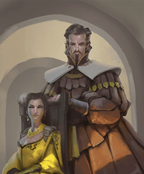
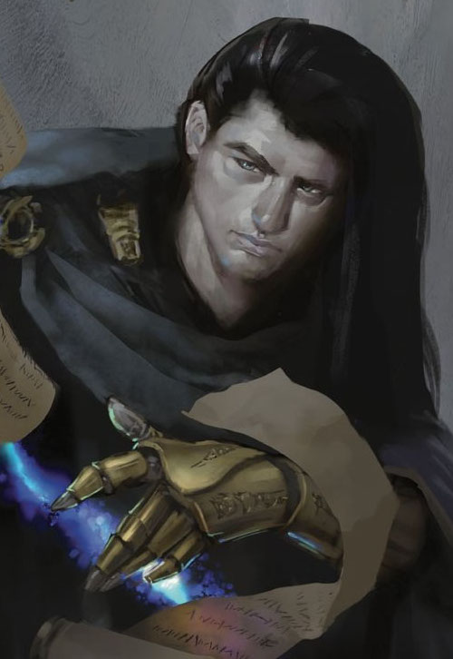
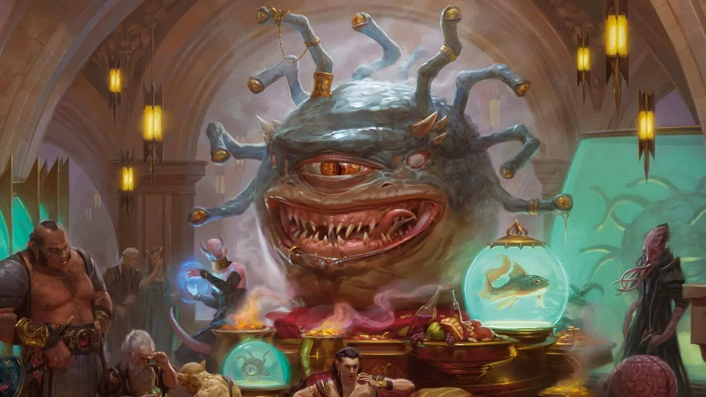

Jarlaxle Baenre

Jarlaxle -- what's not to like about him? He's a swashbuckling flamboyant drow sailin' around the
world. He docked in Waterdeep sometime around the summer on the Sea Maidens Faire. He disguises himself
and his crew of male drows as humans, with Jarlaxle himself going by the alias Captain Zord.
His main goal of being in Waterdeep is political influence -- he plans on wiggiling his way
into the Lords' Alliance, a confederation of cities and towns that band together to stop
common threats. Ontop of this, he gathers intel and information through Nimblewrights, which
are constructs he sells in Waterdeep.
He's the only villain that technically doesn't know anything about the Enigma, not until
it's brought to his attention (intentionally or not). My party approached Captain "Zord"
as part of an fireball investigation, and through their interaction, "Zord" managed to
shift through a specific nimblewright's memory, learning about the Enigma.
Shortly after this, he had gotten into contact with a well-known pirate crew searching for their
run-aways. Lucky for them, jarlaxle just happened to have met them recently, and is willing
to lend a hand for some good coin...
Victoror & Ammalia Cassalanter

The Cassalanters are some of the many nobels that call Waterdeep their home. For these two, they
also call their little estate their ground for devil worship! These two secretly made a pact
with Asmodeus, forking over their children's souls for good health, long life, and power. Their eldest
was taken instantly, transforming him into a chain devil that now stays locked away in the attic.
Their two younger children are doomed to meet a similar fate on their 9th birthday. There is a provision
within their contract that allows The Cassalanters to essentially buy their way out, but it'll take
a lot of coin (which they've been running out of), and souls. They believe that the Enigma might
give them an edge to fufill this contract (least in the coin part -- the souls are straight-up souls).
The party has only briefly seen that at a party, though Kieran has been making visits to their space
more frequently as part of his contract. Knowing the party's involvement with the
Manshoon

Many have heard tales of Manshoon, an ancient wizard that founded the original Zhentarim group. Fearing that
he might one day be annihilated by his enemies (Elminster and Khelben Arunsun, to name a couple), he managed
to create several clones. And these clones thought that they were better. So they fought each other over it,
with that whole fiasco being known as the Manshoon Wars. Turns out, one of the clones managed to secretly
infultrate Waterdeep, and has been holed up in Kolat Towers for years. He's been silently observing the city,
waiting for the perfect time to strike and take over Waterdeep, declaring himself "Wiard-King of Waterdeep" (2/10, needs
better name), mainly through bribing and blackmailing the Masked Lords, before turning his
sight towards the Undermountain. He believes the Enigma might give him an edge on that endeavor, and
uses any Zhentarium who stayed loyal to Manshoon to carry out his plans.
Xanathar

The Beholder Crime Lord, slumming within the city's dungeons underneath. He's a paranoid tyrant who
charms and bullies his minions to submittion. He has a fondness for riches, and some theories suggest
that Neverember hid some gold somewhere under the city. His group originally had possession of the Stone
before being stolen by someone. Xanathar believes the Zhentarium took it, thus starting the gang war between
the two. He sees Zhents everywhere he goes, and lashes out on any that he suspects might be related, making
things within his own gang complicated and strainned.